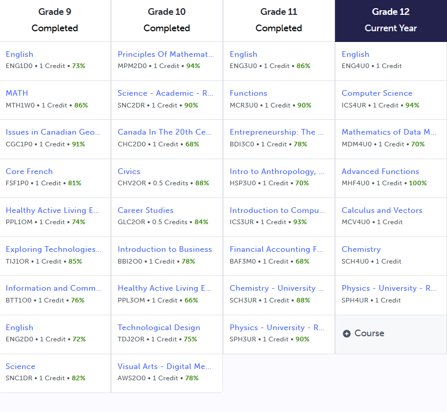

I have always had a passion for STEM-based coursework ever since I learned about the solar system, which triggered my interest in astronomy. Back in middle school, I was interested in pursuing a career in aerospace engineering, which channeled my passion for STEM, astronomy, and engineering into a fulfilling career.
My goal of pursuing a career in aerospace engineering aligned well with the SciTech program's facade of accelerated learning in the field of the sciences of evolving technologies. Additionally, I also heavily appreciated the idea of being surrounded by like-minded peers who also aspire to pursue a career in engineering or stem as a whole.
For this reason, I chose to commit to the regional SciTech program at PCSS and have not looked back since.
Career Goals
Aerospace engineering interests me because of how innovative it is, and because it aligns with my ever-evolving interest in astronomy. My career goal is simple: to work in an aerospace firm such as SpaceX or Nasa for example. What type of aerospace engineer I aspire to become, is yet a mystery, I'm a bit confused on pursuing electrical, computer and mechanical engineering as they all heavily lie in the field of aerospace engineering, but with time I am sure I will figure it out.
Evidence of Safe Practices
Academic Achievement

Bipoc Project
As a way of promoting Black History Month, we were given the task to present to the class about one scientist in the BIPOC Category. My chosen scientist was Dr. Marshall Shepherd, and I showcased this poster to the class and spoke to the class regarding his discoveries. I confidently promoted his research in the field of Hydrometeorological Extremes and Intersection of Weather, Climate, and Society. Overall, I ended up giving a well-prepared and educated speech to my classroom regarding the impact of Dr. Marshall Shephered.
Bottle Rocket
Back in grade 9, I had an everlasting interest in aerospace, and in the Exploring Technologies Course, I had the valuable opportunity to create my own bottle from the very scratch, and I used a paperboard as the base. I was experimenting with many different techniques to save the egg from cracking, and internally I covered the base with cotton to prevent any external tensions from approaching the egg and cracking it. Additionally, I also added a few mini parachutes at the very bottom, to reduce the rocket's speed while approaching the ground overall reducing the surface tension on the egg. In the end, my egg did end up surviving, and this is my technical report regarding my project: Bottle Rocket Technical Report (Canva)
Diwali RazzMatazz
Back in 2021, I took the initiative to volunteer for a festival regarding my culture, and it was called Diwali Razzmataz. As a volunteer, I was responsible for advertising the event and ensuring everything proceeded as planned. I was given some stickers and constantly handed them out to upcoming attendees of the event, wishing them a happy Diwali. I do not look back at this experience with any regret, and I only went upward from here. This is a picture of me wearing the special volunteering shirt, and I worked with all the volunteers.
Climate Crisis Connect
Truth be told, I unfortunately did not participate in any STEM-related extracurriculars all the way back in grade 9, as a result of the COVID-19 pandemic limiting opportunities. However, I was able to participate in Climate Crisis Connect's workshop in grade 10, where we learned about many science-oriented strategies to battle the climate challenge through lectures and hands-on workshops. We learned how to use evolving technologies to our advantage and how science paired up with the right technology saves lives both biologically and physically. Looking back, I learned a lot participating in this workshop and do not regret it.
Academic Achievement
My BluePrint Portfolio
Back in grade 10, I was heavily passionate about astronomy and still am to this day, and I favoured many astrophysics programs at the time. Looking back, this is not optimal for aerospace engineering, and instead, I opt for electrical or mechanical engineering.
Back in Grade 10, during our biology unit, my group and I were asked to simulate the career of a doctor, and were given the case study of a particular patient being Jordan Hal. We completed two rounds of tests, such as urine tests and blood tests, to receive results and moved on further to thyroid and insulin tests. Using the data we received from the tests, we diagnosed our patient with Addison's Disease, and our diagnosis was correct. Looking back, this wasn't my favourite project, nor did I dislike it; the reason was its integration with medicine, something that scares me. However, I did enjoy the team aspect of it.
In Grade 10, I took a course called technological design where we learned the fundamental design process, being spice. We were tasked with creating a penholder, and we used the fundamental design process, and in a way engineered our solution in a similar way to a mechanical engineer, using CAD. I used Walnut and light colored wood for the penholder, and ultimately made one of my projected designs a reality, a balance of being basic and aesthetic. Looking back, this is one of my favourite projects I have made in high school because of the result I got out of it, a real penholder which I still use to this day.
Back in Grade 10, I volunteered for a green energy organization called Innovire. Serving as a volunteer, I helped middle schoolers complete their workshops regarding green energy, where we were teaching students regarding green energy. We helped them do one of two things: code a robot using block code and or build a green energy system using popsicle sticks. This to me shows improvement from the previous year, simply because I went from having zero stem community involvement to volunteering at STEM-centered events frequently.
Book Reading Volunteering
Back in Grade 10 summer, I signed up for an English book review as a volunteering activity, where I tasked myself to read a book over the summer. My experience reading this novel was nothing short of fantastic. I enjoyed reading the book and also sharpened my mind for the upcoming year. I redeemed my efforts for volunteering hours and I find this meaningful and distinct because I stepped up for myself and got involved in the school, something I had not been doing at the time on a frequent basis.
Post Secondary Plans
In Grade 11, I had set my mind upon pursuing a career in electrical or mechanical engineering; however, I did not close the door to the idea of pursuing a career in the field of business. Therefore, I decided to take grade-level chemistry and physics along with business-oriented courses to keep the door open for all careers.
Academic Achievement
CSMC Contest Participation
Friction in Skiing
Working with two peers, we effectively analyzed the importance of friction in the real world. We incorporated some nice video edits to show oursevles in the real world. We came to the conclusion that friction is what keeps skiers stable, and allows them to stop reaching insanely high speeds and injure themselves. We came to the conclusion that friction is very important in skiing because if it fails then it only results in injury. This project was impactful to me as it taught me the importance of friction, something I took for granted earlier.
In Grade 11 Computer Science, I made a hopsital management software for my final culminating where I used java as the coding lanuage. There were many distinct features such as a password entry, the ability to add new patients, assign them to the right doctors and remove them, essentially the same thing a realtime hospital system would do. This means a lot to me because it was my first coding project, and I have only been on an upward spike ever since.
Last summer , I had the privilege to participate in the Shad program at the TMU Campus where selected high school students were invited for four weeks at a STEM boot camp. I was part of like-minded driven and eager students from across Canada. We worked in a collaborative environment, and built a project on green energy called TempoBOT, a thermostat system designed to cool the household using the outside air, reducing both AC emissions and expenses. I was primarily responsible for designing the prototype, and assisted my team to build the finished product, which was finally pitched to experienced businessmen. This was a transformative experience for me; I gained not only technical skills such as design and coding but also social skills like networking, collaboration and public-speaking. We also won the Team of the Year Award, it was truly unforgetable highly recommend!
Final Resume
Academic Achievement
CSMC 2024
Sand Batteries
Working with two group members, we presented to our distinguished class members about sand batteries. We taught them about what they are, how they work, how they are made, their pros and cons etc. A sand battery overall is a large scale high temperature energy storage unit, it uses sand or a likewise material to store energy in the form of heat.​ Overall I had a lot of fun presenting to the class.
I made the GameHUB is a user interactive project with a GUI using JavaFX involving complex concepts such ArrayLists, and animation. I incorporated many new concepts learned in Grade 12 computer science such as front end development, JavaFx, arraylists and object oriented programming all concepts out of my comfort zone. This project was really impactful to me and ever since, I have started learning new technologes such as machine learning etc.
In May 2024, I participated in a hackathon sponsored by the Hack Club organization, and was amazed by their ability to teach students engineering concepts. I saw this as an opportunity to start an engineering-based club in my school, and I was able to secure sponsorship from the Hack Club organization. I formed an executive committee of students, and also persuaded a teacher to supervise the club. We organized exciting workshops for students to learn software and hardware such as creating Music using JavaScript, creating a custom ChatGPT clone using an openai api key, and creating circuits using breadboards. Throughout, I consistently organized weekly meetings and collaborated with executive members to coordinate activities. My instructing and public speaking skills improved significantly, and in the process I fostered a beginner-friendly and positive learning environment for students.
One real-world problem we discovered was the immense wait time in Ontarian Emergency Rooms due to an overloading of patients and a lack of healthcare professionals. After conducting some research, we found out that 1 in 7 ER visitors are simply not necessary, so we decided to build CiviClinic: A simple and intelligent system that builds the bridge between doctors and patients. We used two machine learning models to determine whether a patient needed to visit the ER or not, one image processing model and one natural language processing (NLP) model. Using PyTorch, we trained the image processing model, with 10 epochs and achieved >85% accuracy, and input the prediction to ChatGPT to provide a list of next steps, and whether or not an ER visit is necessary. The same was done for our NLP model, which diagnosed diseases based on symptom input in an array format. For patients who did not require an ER visit, we recommended a list of relevant doctors in their area, reducing the number of unnecessary visits to ERs and doctors' offices.
Additionally, we also integrated a Map API key, where nearby relevant doctors and hospitals were shown to the user. For the doctor's end of things, we showed a list of relevant patients, and made a software to make patient notes more formal once again, using the API key.